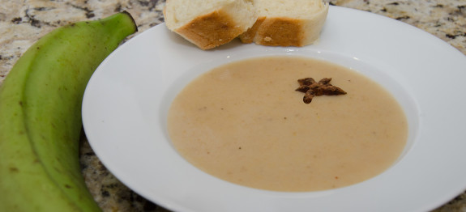

Labouyi (Flour Porridge)

Description
A common haitian breakfast food that can be made with flour, plaintains, oatmeal, and even cornmeal.
Ingredients
- 1 cup all purpose flour
- 1 (12oz) can evaporated milk
- 1 cup sugar
- 2 cinnamon sticks
- 1/2 teaspoon nutmeg
- 1/4 teaspoon salt
- 1/4 teaspoon
- 1 teaspoon almond extract
- 1 tablespoon butter
Steps
- In a medium saucepan on a medium to high flame toast flour for about
six minutes or until light beige color.
Using a strainer, sift toasted flour into a bowl and set aside.
- In the same saucepan add 2 cups of water, cinnamon sticks, lime zest and let that come to a boil.
Lower flame, add milk, sugar and stir.
- Add 3 cups of water to toasted flour, make sure it is well combined.
Add flour mixture to milk mixture and stir.
- Add nutmeg, salt, butter, and stir. Lastly, add almond extract and stir. Serve and enjoy!
back to home
end